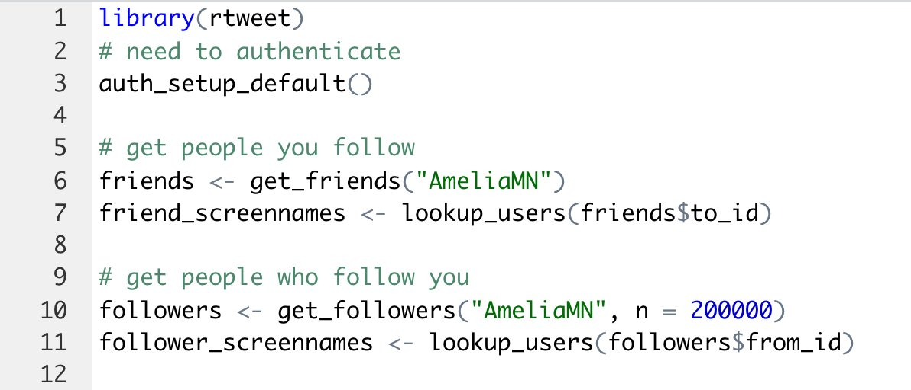

# Load rtweet and tidyverse for cleaning and saving data
library(rtweet)
library(tidyverse)
# Authenticate twitter
auth_setup_default()
# Twitter user name: I use my own name @vivalosburros
user <- "vivalosburros"
# Your tweets -------------------------------------------------------------
tweets <- get_timeline(user, n = Inf)
# Who you follow ----------------------------------------------------------
friends <- get_friends(user)
friend_screennames <- lookup_users(friends$to_id)
# Followers ---------------------------------------------------------------
followers <- get_followers(user)
follower_screennames <- lookup_users(followers$from_id)
# Lists -------------------------------------------------------------------
lists <- lists_users(user)
# Create a list of tibbles of the different lists you follow
lists_screenames <- map(lists$list_id, lists_members)Downloading Twitter data with rtweet
Get your tweets, those you follow, followers, and Twitter lists
rstats
twitter
A short breakdown of how to quickly download Twitter data using the rtweet package developed by rOpenSci.
Last night, the 17th of November, 2022, I, like so many others, was rather gleefully, but also sadly, doom scrolling through Twitter as Elon Musk seemed to be rocketing the social network into the ground at amazing speed.
It seemed a good time to heed the warning that so many had put out about downloading your twitter data: your tweets, those you follow, your followers, and maybe the Twitter lists that you have created or followed. I knew that much of this could be done with the rtweet package, and I had seen a few people tweet out ways to get the data, in particular, I had saved Amelia McNamara’s tweet from 11 November 2022.

I followed her script, played around with the functions in rtweet a bit, and tried to fit the basics of a script to download most of the important data in one tweet.
Below, I will expand on the Tweet to show more fully how to download and save your Twitter data. This closely follows Amelia’s script but adds a bit of data.
Getting the data
Let’s get the data of the tweets, followers, those followed, and lists of a single user. Here, I use my own account of @vivalosburros. If you want to go even further in moving away from Twitter and use rtweet to delete your tweets, see Julia Silge’s post.
Clean the data
The data we get is returned as tibbles with many columns that have data that might not be all that useful to you. However, you can easily skip this data cleaning step if you just want the raw data. The variables that you are interested in might be different than the ones I have below.
# Select desired columns: Feel free to skip
tweets <- tweets |>
select(created_at:full_text, retweet_count:retweeted)
friend_screennames <- friend_screennames |>
select(id:url)
follower_screennames <- follower_screennames |>
select(id:url)
lists_screenames <- lists_screenames |>
map(~ select(., user_id:url))Saving the data
Now we can save the data in a folder called data/ with the readr. The only tricky part is using walk2() from purrr to save the list of tibbles that has the Twitter lists you follow, if you follow more than one.
# Save the tweets, following, and followers data
write_csv(tweets, "data/tweets.csv")
write_csv(friend_screennames, "data/following.csv")
write_csv(follower_screennames, "data/followers.csv")
# Save the list data and name csv with the list name
# Get names of lists
list_names <- lists$name
walk2(lists_screenames,
list_names,
~ write_csv(.x, paste0("data/list-", .y, ".csv")))Now you have all your data. All that is left is to watch the ship sink and make fun of billionaires who think they are geniuses 🫡.